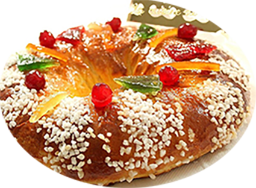

Couronne des Rois

Pour 8 personnes
Préparation : 30 mn
Cuisson 30 mn
Ingrédients
| Pour la pâte |
Pour le sirop |
|---|
- 500 gr de farine
- 20 gr de levure de boulanger
- 2 œufs
- Fruits confit
|
- 50 gr d’eau
- 50 gr de sucre
- 50 gr de beurre fondu
- 35 gr de fleur d’oranger
- 30 gr de rhum
- 1 c. à c. d’extrait de citron
- 1 jus d’orange
- 1 pincée de sel
|
Recette
¨Pour le sirop
- Mélanger puis chauffer à40° : l’eau, le sucre, le beurre fondu, le sel
- Ajouter la fleur d’oranger, le rhum, l’extrait de citron, le jus d’orange
Pour la pâte
- Prélever un peu de sirop et mélanger la levure de boulanger
- Dans un bol mélanger la farine, les œufs battus, le sirop contenant la levure
- Ajouter petit à petit le restant de sirop, incorporer les fruits confits (facultatif, en réserver pour la décoration)
- Pétrir 15 mn avec le crochet jusqu’à l’obtention d’une pâte souple
- Faire lever la pâte à température ambiante
- Rabaisser la pâte et la réserver au frais une nuit
Le lendemain
- Séparer la pâte en 2 ou 3 pâtons, laisser gonfler
- Façonner 2 ou 3 couronnes, laisser gonfler
- Décorer avec un œuf, décoré avec des fruits confits, perle de sucre
- Enfourner à 180° pendant 15 mn (départ four chaud)
|